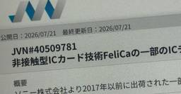
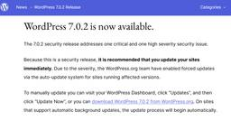
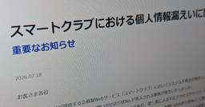
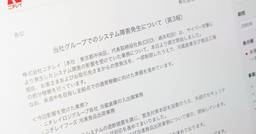

ITmedia NEWS セキュリティ 最新記事一覧
フィード

「2日かかる攻撃が25分に」生成AIで“爆速化”するサイバー攻撃、パロアルトの識者が警鐘 3
3
ITmedia NEWS セキュリティ 最新記事一覧
パロアルトネットワークスの染谷征良氏（チーフサイバーセキュリティストラテジスト）は、生成AIの普及で変化するサイバー攻撃の動向と企業に求められるセキュリティ対策を、ソフトバンクの年次イベント「SoftBank World 2026」の講演で紹介した。
13時間前
「クレカが使えない！」 16日朝の大規模障害を引き起こした「Cybersource」とは何者か 110
ITmedia NEWS セキュリティ 最新記事一覧
7月16日朝、全国で「カードが使えない」が相次いだ大規模障害。原因はVisa傘下の決済基盤Cybersourceだったが、なぜVisa以外のブランドまで巻き込まれ、なぜ無傷の事業者もいたのか。カード決済の裏側にある「ゲートウェイ」の役割と、三井住友カードやStripeが取った"迂回ルート"の仕組みを解説する。
2日前
高2が700万件漏えいに関与も……目立つ若年層のサイバー犯罪に「ホワイトハッカーにすれば」が安直なワケ 51
ITmedia NEWS セキュリティ 最新記事一覧
若者によるサイバー攻撃への関与が相次いで報じられている。よく聞く「腕があるならホワイトハッカーにすればいい」という論調は正しいのか。
2日前
“交渉人”なのに犯人と内通、計120億円超の身代金吊り上げ セキュリティ企業の元従業員に禁錮刑 米国 32
ITmedia NEWS セキュリティ 最新記事一覧
ランサムウェア攻撃の被害に遭った企業が、セキュリティ企業に対応を依頼。ところが被害企業を支援するはずの交渉人が、密かに犯人側と結託して身代金の額を吊り上げ、見返りを受け取っていた――米国でこんな事件が発生した。
2日前
韓国外交官「ほぼ全員」の情報流出か 国立外交院への不正アクセスで最大1万件 現地報道
22
ITmedia NEWS セキュリティ 最新記事一覧
韓国外務省傘下の国立外交院がサイバー攻撃を受け、韓国の外交官ほぼ全員に当たる最大1万件の個人情報が流出した恐れがあると、東亜日報や聯合ニュースなど韓国メディアが相次いで報じた。攻撃者は約10カ月にわたりサーバに不正接続していたという。
2日前

1年前に騒がれたFeliCaの脆弱性、JVNがようやく公表 深刻度は「高」 41
ITmedia NEWS セキュリティ 最新記事一覧
当時は正式公開前に報道が先行したことが問題視され、経産省などが脆弱性情報の取り扱いに関する異例の要請を出す事態になっていた。
2日前
浅田真央さん旧ドメイン「アフィサイトに」と販売、批判受けたGMO 「表現は改修した」「ドメインは共有資産」 203
ITmedia NEWS セキュリティ 最新記事一覧
浅田真央さんの旧公式サイトのドメイン「mao-asada.jp」を「アフィリエイトサイトに」などとうたってオークションで販売し、批判を受けたGMOインターネットが、ITmedia NEWSの取材に経緯と見解を答えた。著名ドメインの販売を拒める立場にはないとする一方、宣伝文言は改修したとしている。
3日前
Hugging Face侵害のAIエージェントはOpenAIのモデル──社内のサイバー能力評価中に「GPT-5.6 Sol」などが暴走し本番DBに侵入 113
ITmedia NEWS セキュリティ 最新記事一覧
OpenAIは、Hugging Faceで発生したサイバーインシデントの原因が自社のAIモデルだったと発表した。社内評価中に安全機能を抑制した「GPT-5.6 Sol」などが隔離環境を突破し、ゼロデイ脆弱性を悪用して外部に侵入したという。OpenAIはインフラ管理の厳格化や防御支援などの再発防止策を挙げている。
3日前

WordPressに認証不要でコード実行される緊急の脆弱性 即時更新を呼び掛け 18
ITmedia NEWS セキュリティ 最新記事一覧
WordPress開発チームは、深刻な2件の脆弱性を修正したセキュリティリリース「7.0.2」を公開した。未認証でリモートコードが実行される恐れがあるため、影響を受けるWebサイトへ自動更新を順次適用中。すでにWAF等での一時緩和策も提供されているが、開発チームは本体の迅速な手動アップデートを強く推奨している。
3日前
Hugging FaceにAI主導のサイバー攻撃 防御もAIで対抗するも、商用モデルは解析拒否で「GLM」採用 70
ITmedia NEWS セキュリティ 最新記事一覧
Hugging Faceは、自律型AIエージェントによる本番インフラへの侵入を検知、対処したと発表した。一部の内部データセットと複数の資格情報への不正アクセスを確認した。ログ解析には当初商用AIを使ったが、安全ガードレールに阻まれたため、最終的にオープンウェイトモデル「GLM 5.2」を自社インフラで実行して解析した。
5日前

佐川急便、約7万人分の個人情報漏えいか 「スマートクラブ」通知メールに別人の氏名など表示 39
ITmedia NEWS セキュリティ 最新記事一覧
佐川急便は7月18日、会員制Webサービス「スマートクラブ」のシステム不具合により、配達予定通知メールの一部に別の利用者の氏名やメールアドレスなどが表示される事象が起き、約7万人の個人情報に影響が及んだ可能性があると発表した。原因は不具合の復旧作業時の設定ミスで、不正アクセスやサイバー攻撃ではないという。
6日前

ニチレイ、システム障害の業務を順次再開 全面復旧は来週中めど 7
ITmedia NEWS セキュリティ 最新記事一覧
ニチレイは7月17日、サイバー攻撃によるシステム障害の影響を受けていた業務を同日から順次再開したと発表した。受発注を一部制限した上で冷蔵倉庫と食品工場を部分稼働しており、来週中の全拠点での通常稼働を目指す。
7日前

クレカ障害、全国で発生か 「カード払いできない」報告多数【復旧】
ITmedia NEWS セキュリティ 最新記事一覧
Xでは、Visaブランドのカードや三井住友カードが使えなかったという報告が目立つが、他社カードも含めて影響が出ているようだ。
9日前
ニチレイ、システム障害はサイバー攻撃によるものと公表 17日から出荷業務など順次再開へ
ITmedia NEWS セキュリティ 最新記事一覧
ニチレイで発生したシステム障害について、同社はサーバがサイバー攻撃を受けたことを確認したと発表した。影響が出ている冷蔵倉庫の入出庫や冷凍食品の出荷といった業務は、外部のセキュリティ専門会社と安全対策を講じた上で、17日から順次再開する予定だ。
9日前
ほっともっと・やよい軒も「食材納品に遅れ」 一部店舗で当面続く見込み ニチレイへの不正アクセスで
ITmedia NEWS セキュリティ 最新記事一覧
プレナスは7月15日、ニチレイへの不正アクセスに伴うシステム障害の影響で、「ほっともっと」と「やよい軒」の一部店舗で当面の間、食材の納品が遅れる見込みだとITmedia NEWSの取材に明らかにした。
9日前
イオンも一部欠品 ニチレイへの不正アクセスが影響
ITmedia NEWS セキュリティ 最新記事一覧
イオンは7月15日、ニチレイへの不正アクセスに伴うシステム障害の影響で、一部店舗で商品の欠品が生じているとITmedia NEWSの取材で明らかにした。欠品している商品や店舗などの詳細は調査中という。
10日前
ATM出金上限を200万円→50万円に auじぶん銀 初期設定も30万円に引き下げ
ITmedia NEWS セキュリティ 最新記事一覧
auじぶん銀行は7月13日、ATM出金限度額の上限を現在の200万円から50万円に引き下げると発表した。適用は9月13日からで、口座開設時の初期設定額も50万円から30万円に引き下げる。
11日前
マネフォ上方修正、売上最大623億円に GitHub不正アクセス影響は「限定的」
ITmedia NEWS セキュリティ 最新記事一覧
不正アクセス関連の補償で最大1.5億円の売上影響を見込むが「好調な売上高とコストコントロールにより、通期予想への影響は限定的」。
11日前
ニチレイに不正アクセス、冷凍食品の出荷に支障 システムに障害
ITmedia NEWS セキュリティ 最新記事一覧
ニチレイは7月13日、不正アクセスによるシステム障害が発生したと発表した。冷蔵倉庫の入出庫や冷凍食品の出荷業務に影響が出ている。
11日前
LINEヤフー、710万件の識別情報を誤送信 「LINEポコポコ」などゲームユーザー対象
ITmedia NEWS セキュリティ 最新記事一覧
LINEヤフーが、ゲーム「LINE ポコポコ」「LINE ポコパンタウン」「LINE ポコパン」ユーザーの識別情報710万件近くを外部の広告ツールに誤送信していたと発表した。
11日前
日本交通に不正アクセス、電話でタクシー配車不能に 「GO」経由は無事
ITmedia NEWS セキュリティ 最新記事一覧
電話によるタクシー配車やハイヤーのWeb予約が停止しているが、アプリ「GO」経由の配車は影響なく利用できる。
12日前
論文サイト「arXiv」、投稿の約9割で非公開情報が“丸見え状態”か パスワードや秘密鍵、自宅のGPS座標なども 270万件を調査
ITmedia NEWS セキュリティ 最新記事一覧
ドイツのアーヘン工科大学に所属する研究者らが発表した論文「Hidden Secrets in the arXiv: Discovering, Analyzing, and Preventing Unintentional Information Disclosure in Source Files of Scientific Preprints」は、査読前論文を公開するWebサイト「arXiv」に投稿された論文から個人情報や機密情報、意図しない情報が漏えいしていることを明らかにした研究報告だ。
12日前
サイバー攻撃被害のアサヒ、販促と新商品で反転攻勢へ 26年12月期は創業来初の売上収益3兆円突破狙う
ITmedia NEWS セキュリティ 最新記事一覧
アサヒグループホールディングス（HD）が8日発表した2025年12月期連結決算は、純利益が前期比36.7％減の1215億円と大きく落ち込んだ。昨年9月に発生したサイバー攻撃の影響が400億円弱の減益要因になった。26年12月期は新商品の投入や広告、店頭での販売促進などを積極的に行い、反転攻勢に打って出る。売上高にあたる売上収益は創業来初となる3兆円突破を狙う。
15日前
「快活CLUB」へのサイバー攻撃、18歳男を新たに逮捕 ChatGPT製プログラムを使用 グループには当時小6も 報道
ITmedia NEWS セキュリティ 最新記事一覧
複合カフェ「快活CLUB」の運営会社がサイバー攻撃を受けた事件で、警視庁サイバー犯罪対策課が新たに18歳の会社員の男を逮捕したことが分かった。読売新聞オンラインなど複数のメディアが7月9日までに報じた。
15日前
三重県、庁内のUSBメモリ47個からマルウェア検知 陸自の報道受け1万個超を一斉調査
ITmedia NEWS セキュリティ 最新記事一覧
三重県は7月8日、庁内で業務に使うUSBメモリを調査した結果、47個からマルウェアを検知したと発表した。いずれも活動していない古典的なもので、感染や被害はなかったという。
16日前
BIGLOBE、メルアド漏えいは約502万人分と判明 ニフティも約225万人分 KDDI基盤への不正アクセス続報
ITmedia NEWS セキュリティ 最新記事一覧
ビッグローブは7月6日、「BIGLOBEメール」への不正アクセスについて、メールアドレスとBIGLOBE ID計501万6432人分の漏えいを確認したと発表した。同じ基盤を使うニフティも同日、224万8708人分の漏えいを公表した。
18日前
KDDI、パスワード760万人分漏えい メアドも1220万人分 ISP事業者向けシステムへの不正アクセスで
ITmedia NEWS セキュリティ 最新記事一覧
KDDIがISP事業者向けに提供しているメールシステムが不正アクセスを受けた件を巡り、メールアドレス1223万3087万人分、パスワード761万6173万人分の漏えいを確認したと発表した。発表当初は最大1422万件に漏えいの可能性があると発表していた。
18日前
アフラックに不正アクセス、約438万人分の個人情報漏えい 口座情報23万件も
ITmedia NEWS セキュリティ 最新記事一覧
アフラック生命保険は6月30日、顧客専用サイト「アフラック よりそうネット」などへの第三者による不正アクセスで、約438万人分の顧客個人情報が漏えいしたと発表した。うち約23万人分には保険料振替口座の情報も含まれる。
24日前